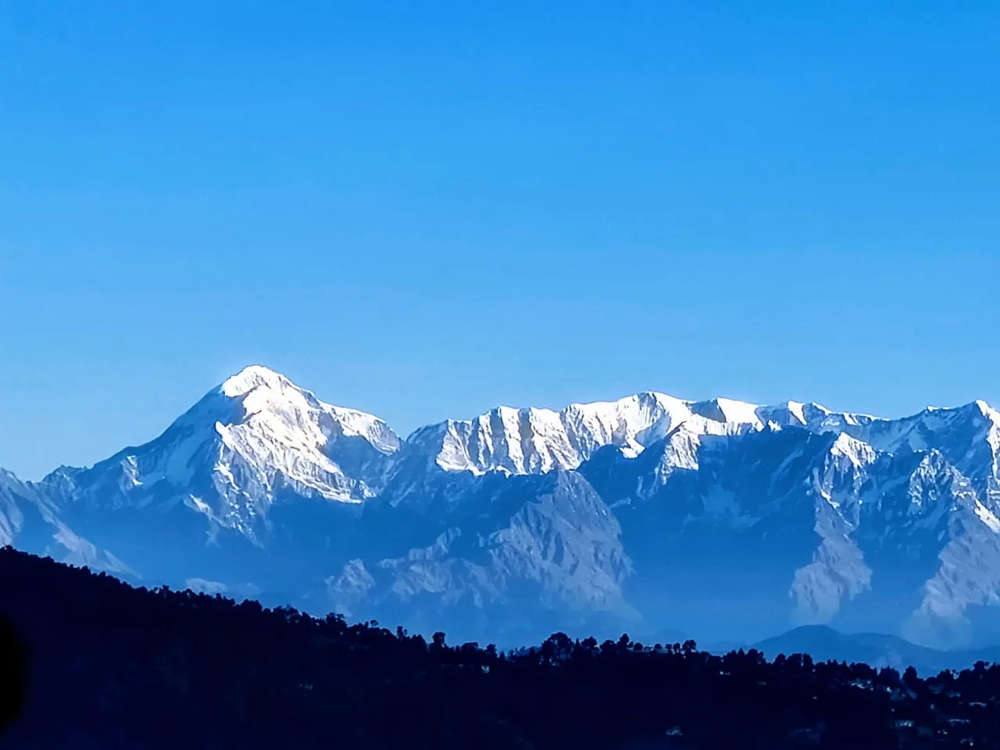
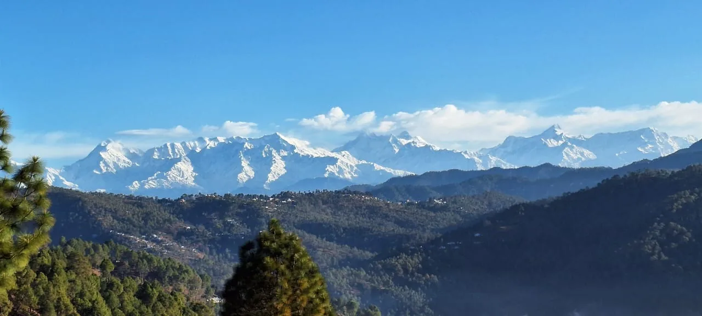

Himalayan Hamlet / Almora guide
Our family home in Almora
Himalayan Hamlet is the house where my brother Nitin, my sister Manisha and I grew up. Today my parents welcome guests into it as part of the family.
A house with a history
My grandfather built this house in Almora. Years later, my father, Arjun, added another floor, which is the floor guests stay on today. My brother Nitin, my sister Manisha and I grew up here. Then, like many people from the hills, we moved away for work and settled in Bangalore, where my wife Akansha and I live now. She has met a few of our guests on her visits too.
My parents, Arjun and Saraswati, stayed. During the Covid pandemic, when the house had few visitors, we began hosting guests as a homestay. We still visit for holidays and workations, so we know the house the way a guest does too.
Mornings face east
The house faces east, so the first sun reaches it early. In the morning light you can see Nanda Devi, Nandakot, Chaukhamba, Trishul and other peaks glowing, and you can hear the birds before you see them. With luck you will spot the local wild hens wandering around. The morning is always pleasant.

“One of the most memorable parts of our stay was the breathtaking sunrise and the stunning panoramic view of the entire Himalayan range from the balcony. Waking up to such a magical view every morning was an unforgettable experience.”Sarada, guest
My favourite hour is the slow morning. I get up, walk through the garden among the green, look at the peaks, listen to the birds, and say a small hello to familiar faces on their way to work. In the city, mornings start with a rush to beat the traffic. Here, they start slowly, and it is the thing I miss most when I am away.

The food, and the chats around it
Guests eat home-cooked Indian food made in our kitchen. There are local juices, homemade chutneys and achaar, and fruits and vegetables grown at home. Tea and coffee are shared, usually with a long chat.
“The food aunty makes and the chats, snacks we had with the family was the star of our trip, we stayed for a week there and it felt like a family vacation.”Piyush, guest
“More than the food itself, it was her sweet little gestures, sending some sweets, extra condiments, or checking in with warmth that made every meal feel special. You genuinely begin to feel like you are not staying at a property, but with family.”Sakshi, guest
Many guests leave asking for recipes. They ask where to find the spices, they ask for plant cuttings and tiny flower pots, and a few have even asked for advice on buying a piece of land. We are happy to oblige, apart from the land, which we leave to you to think over.
Parents who go the extra mile
My parents treat guests the way they would treat relatives. They help with luggage, join guests on short treks nearby, fetch groceries or milk, and explain the area: the plants, the mountains and the local culture. They also help guests plan their travel around Almora, arrange taxis, and pick up local sweets and spices to take home. Guests are welcome to walk to the farm, pick vegetables and fruit, and plant flowers. A few people around the house help keep things clean and carry bags. My sister Manisha has also looked after guests, from decorating the rooms to walks and treks.
“The entire family is extremely warm and it honestly felt like we are visiting a family; that’s how much they take care of you.”Astha, guest
Meet Lucy
Lucy has been with our family for about ten years. She is a cream and white dog with a lovely thick coat, and she is friendly with everyone. You will often see her roaming around on the ground floor with the family, and she sometimes joins guests and us on short treks nearby.
“Also they have a pet dog and a cat, we enjoyed playing with them.”Divya, guest
Solo travellers, long stays and return guests
Guests often extend their stay. Some have stayed more than a month, exploring Almora and working from the house. We have hosted solo travellers too, who enjoyed time with my parents and the family, and also their own quiet time.
“Each member played their part in making me feel safe and very welcome, which means a lot as a solo traveler in India for the first time.”Dora, guest
Some guests now come back again and again, and they feel like family to us.
The small things guests mention
These are not things we advertise, but guests mention them again and again in their reviews.
- A welcome drink. Guests are greeted with a glass of buransh (rhododendron) juice.
- A bonfire on cold evenings, arranged by my father.
- Vegetables from the garden for guests who want to cook in the kitchen.
- A scooty to borrow or rent for a short tour of town.
- Company on a walk. Family members have joined guests on the trek to Kasar Devi and other nearby hikes.
“Ashish and his family are always just a message away, yet they give you complete privacy throughout your stay. It’s rare to find this perfect balance.”Saurabh, guest
“We booked this place for 1 day but we extended our stay here for next day as well, because we felt like home only and the food prepared by aunt is so good.”Swati, guest
“They were always there to help us, from renting a scooty, to food, to giving us right directions.”Sanjivani, guest
“For anyone wondering about work-from-home facilities, they have good network connectivity and reliable high-speed Wi-Fi. I was able to complete my office work seamlessly and attend Zoom calls without any glitches.”Sakshi, guest